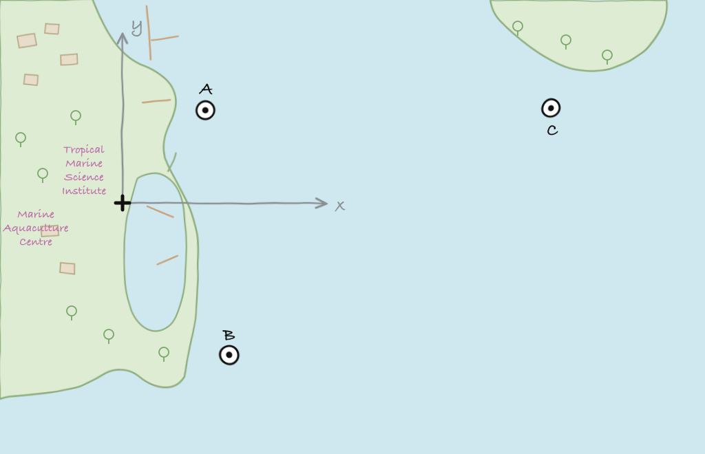

> node.name
node
> node.address
232
> node.addressSize
8
> node.origin
[1.216, 103.851]
> node.location
[121.0, 137.0, -10.0]
> node.mobility
false5 Setting up small networks
In this chapter, we learn how to work with point-to-point links and small networks, where all nodes are able to talk to each other.
5.1 Netiquette testbed
The Netiquette testbed in Singapore was a 3-node network that was deployed at sea for 2 years, and accessible over the Internet. Nodes A and B were cabled, seabed-mounted nodes, while node C was a solar-powered buoy. We use a simulated version of the Netiquette testbed to learn how to set up and operate small networks.

To start the simulated network, we simply run the netq-network.groovy simulation script:
$ bin/unet samples/netq-network.groovy
Netiquette 3-node network
-------------------------
Node A: tcp://localhost:1101, http://localhost:8081/
Node B: tcp://localhost:1102, http://localhost:8082/
Node C: tcp://localhost:1103, http://localhost:8083/5.2 Node names & addresses
We start off by checking the configuration of each node:
Node A:
Node B:
> node.name
node
> node.address
31
> node.addressSize
8
> node.origin
[1.216, 103.851]
> node.location
[160.0, -232.0, -15.0]
> node.mobility
falseNode C:
> node.name
node
> node.address
74
> node.addressSize
8
> node.origin
[1.216, 103.851]
> node.location
[651.0, 140.0, -5.0]
> node.mobility
falseAll nodes are configured to use 8-bit addresses. Node A is address 232, node B is 31, and node C is 74. The origin is set to GPS location 1.216°N, 103.851°E. Locations are measured in meters relative to this origin, with \(x\)-axis pointing east, and \(y\)-axis pointing north. The mobility of the nodes is set to false to indicate that the nodes are static (for mobile nodes, mobility should be set to true). These node parameters, the available coordinate systems, and how the origin and location work together are explained in detail in Chapter 14.
Tip
In the simulated network, all of the node parameters are correctly set up by the simulator. In a real network, you may need to set up each node by manually setting the appropriate parameters. To ensure that the nodes retain the parameters between reboots, it is best to set these parameters in the startup.groovy script that is run whenever each modem boots up.
5.3 Connectivity & ranging
Let us first check the connectivity between the nodes:
Node A:
> ping host('B')
PING 31
Response from 31: seq=1 time=1758 ms
1 packets transmitted, 1 packets received, 0% packet loss
> ping host('C')
PING 74
Response from 74: seq=1 time=1970 ms
1 packets transmitted, 1 packets received, 0% packet lossThe connectivity from node A to nodes B and C looks good. What about the connectivity from node B to node C?
Node B:
> ping host('C')
PING 74
Response from 74: seq=1 time=2086 ms
1 packets transmitted, 1 packets received, 0% packet lossLooks good too!
WarningPacket loss
In this simulation, everything checks out nicely. But, in the real world, there may be packet loss to contend with. We will see how to handle those in later chapters.
We can also cross-check that the routes from node A to nodes B and C are direct. On node A:
> trace host('B')
[232, 31, 232]
> trace host('C')
[232, 74, 232]The first trace shows that the datagram originated at node A (address 232), reached node B (address 31), and was sent back to node A. The second trace similarly went from node A to node C (address 74) and back. No hops in between, since our network is fully connected.
We can also make range measurements (in meters) between the nodes:
Node A:
> range host('A')
0.0
> range host('B')
380.75925
> range host('C')
543.84393Node B:
> range host('A')
380.77942
> range host('B')
0.0
> range host('C')
632.176335.4 Sending text messages and datagrams
Once we have connectivity, we can of course send text messages and datagrams from the shell from node A:
> B = host('B'); // save ourselves some typing later!
> tell B, 'hello!'
OK
> dtx B, [1,2,3,4,5]
AGREE
caddy >> DatagramTransmissionNtf:INFORM[id:019f4238-ce28-75df-8b28-70e418877e45 to:31]We see the arrivals on node B:
[232]: hello!
phy >> RxFrameNtf:INFORM[type:CONTROL from:232 to:31 rxStartTime:1551312505395 rssi:0.0 (5 bytes)]
0102030405We have already seen in Chapter 2 how to send text messages and datagrams from the shell and using the UnetSocket API, as well as from external applications. Hence we won’t dwell on it here.
5.5 Remote access & file transfers
Data is often stored in files. Transferring files between nodes is a common requirement. Another common need is the ability to execute commands on a remote node deployed somewhere underwater and inaccessible via the web interface.
File transfers and remote access are disabled by default. Let us enable this on node B:
> remote
« Data transport & remote access »
Provides advanced transport and remote services.
[org.arl.unet.DatagramParam]
MTU = 10485760
RTU ⤇ 717
[org.arl.unet.UnetParam]
queueLength ⤇ [datagrams:0, files:0]
[org.arl.unet.transport.CaddyLite.Param]
ackTimeout = 60.0
compress = true
cwd = scripts
dsp = router
enable = false
execDelay = 0.5
groovy = true
retry = 0
retryDelay = 5.0
shell = shell
> remote.enable = true
trueNow we can run remote commands, and send & receive files on node B remotely. Let’s try it from node A:
> rsh B, 'tell me,"hi!";'
OK
[31]: hi!We asked node B to send a hi! back to me. The variable me is automatically defined to be the source node address during the execution of the shell command when Groovy extensions are enabled (remote.groovy = true). The semicolon at the end indicates that we do not require the return value from the command to be sent back to node A. Had we omitted it, we would have also received an additional OK back as the output of the tell command. We receive a hi! after a short delay.
We then list local files to check that we have a file called README.md:
> ls
README.md [759 bytes]We then send file README.md to node B and save it there as README2.md. We use a different name for saving, as the simulator uses a shared scripts folder for files on all nodes. In a real network, we could have just run fput B, 'README.md'.
> fput B, 'README.md', 'README2.md'
AGREE
caddy >> RemoteSuccessNtf:INFORM[id:019a0673-c2dc-737b-d3f8-ea53a9a13d5f] // <5>We see a notification telling us that the file transfer was completed. We then ask node B for a list of files there:
> rsh B, 'ls'
OK
[31]:
README2.md [759 bytes]
README.md [759 bytes]Node B sends us a list of files showing the README2.md file transferred over.
We then ask node B to send a copy of README2.md back to node A, and store it locally as README3.md. Again, we use a different name simply because of the shared scripts folder. Otherwise just a fget B, 'README2.md' would have been sufficient.
> fget B, 'README2.md', 'README3.md'
AGREE
caddy >> RemoteFileNtf:INFORM[from:31 filename:scripts/README3.md transferDuration:26.643]We finally list local files to check that we now have a file called README3.md:
> ls
README2.md [759 bytes]
README3.md [759 bytes]
README.md [759 bytes]We could even do more complicated tasks from node A such as asking node B to range to node C and send the result back to us:
> rsh B, 'range '+host('C')
OK
[31]: 632.17633
TipMessages for shell commands
In this chapter, we used several shell commands: ping, trace, tell, range, dtx, fput, fget and rsh. While these are convenient shortcuts to use in the shell, it is valuable to know the underlying UnetStack messages that were sent by each of the commands:
ping(a)≡transport << new DatagramReq(to: a, protocol: Protocol.TRANSPORT, reliability: true)trace(a)≡rdp << new RouteTraceReq(to: a)range(a)≡ranging << new RangeReq(to: a)dtx(a, data)≡remote << new DatagramReq(to: a, data: data)tell(a, msg)≡remote << new RemoteTextReq(to: a, text: msg)rsh(a, cmd)≡remote << new RemoteExecReq(to: a, command: cmd)fput(a, filename)≡remote << new RemoteFilePutReq(to: a, filename: filename)fget(a, filename)≡remote << new RemoteFileGetReq(to: a, filename: filename)
When you write your own UnetStack applications that interface with the modem, you will need to send these messages from your code.